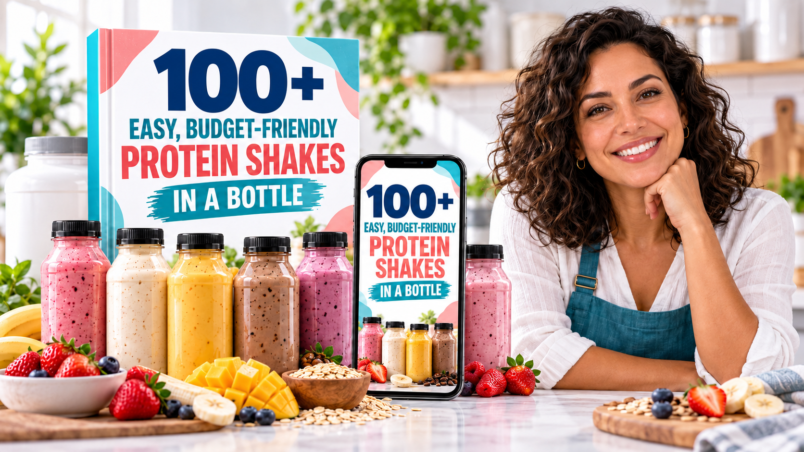
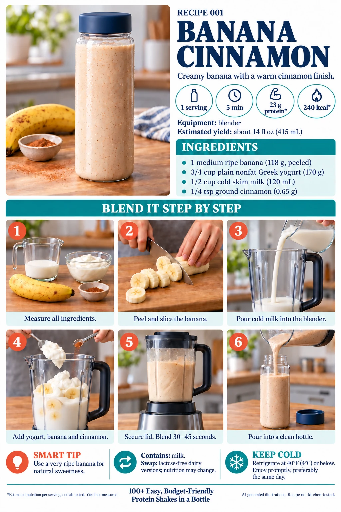
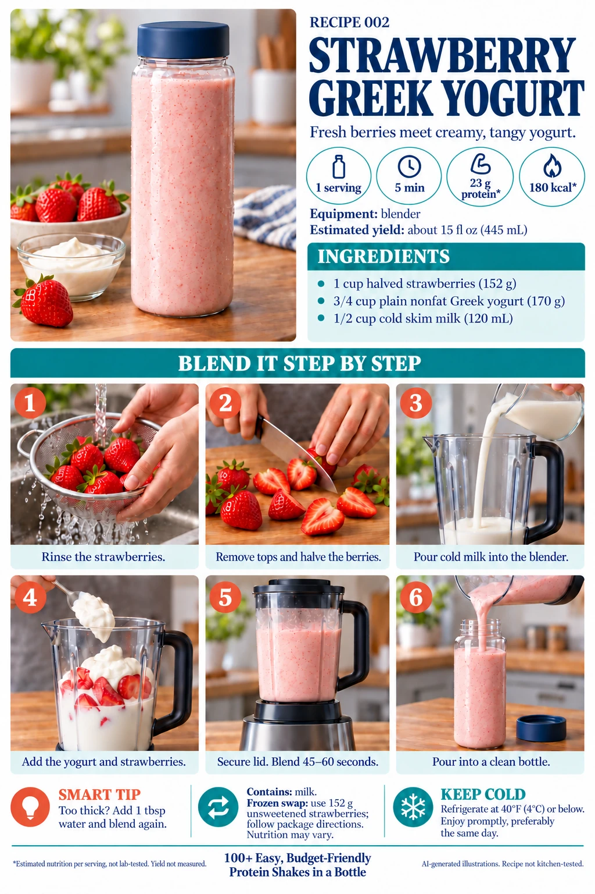
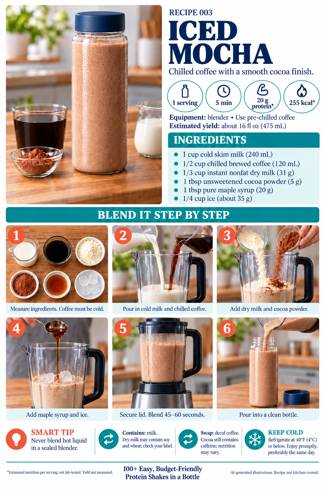
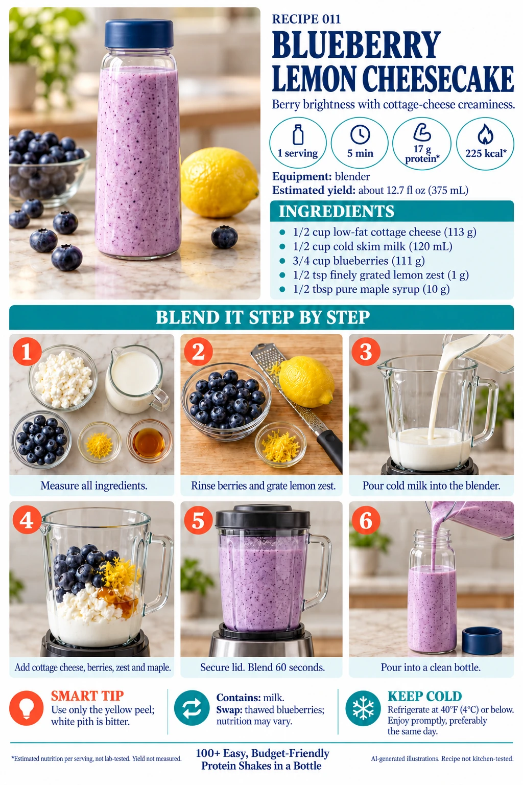
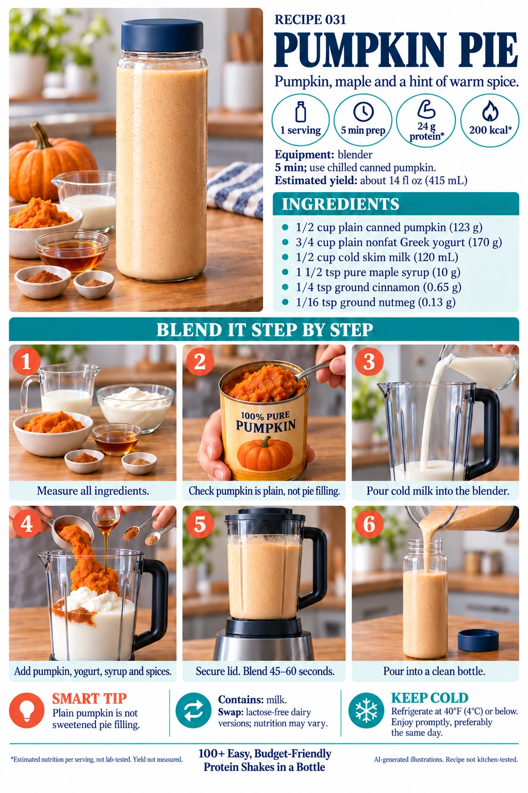
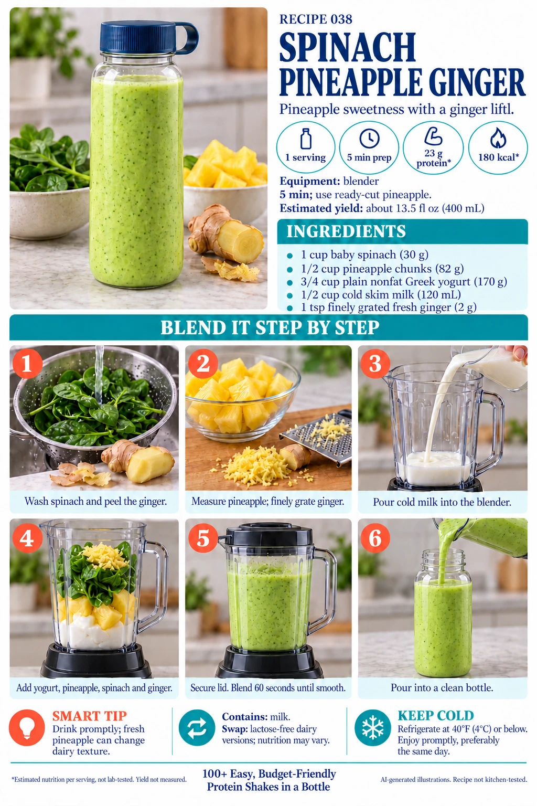
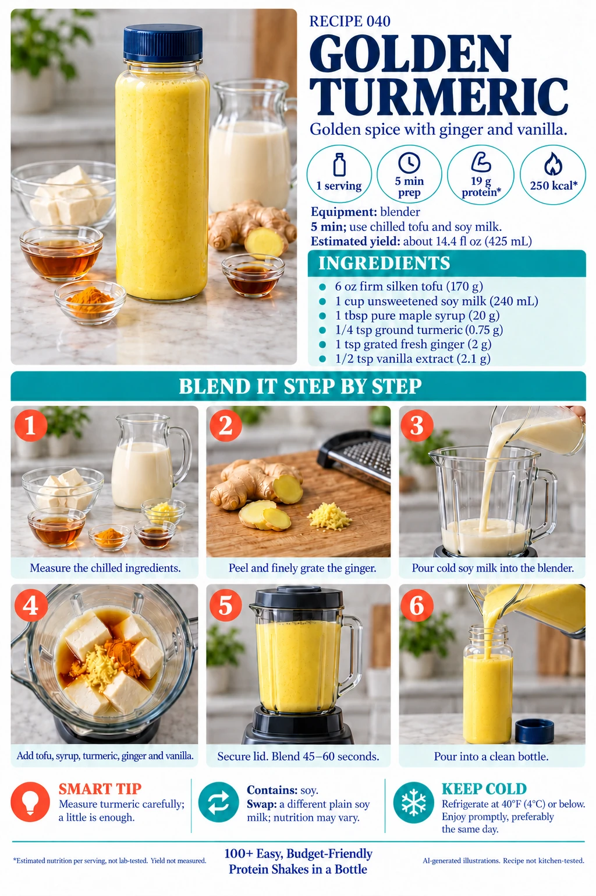
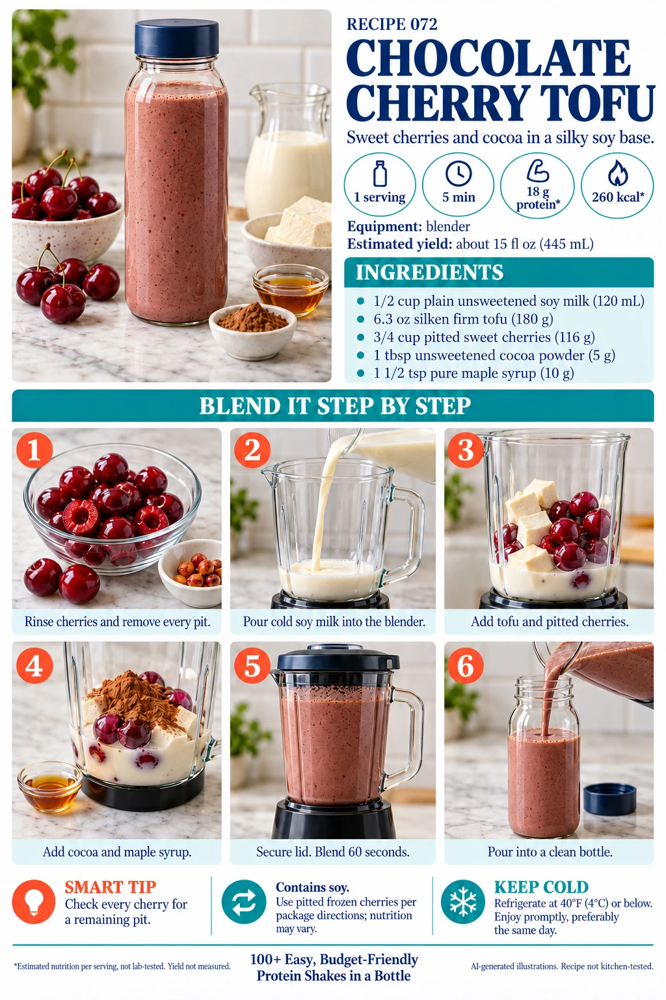
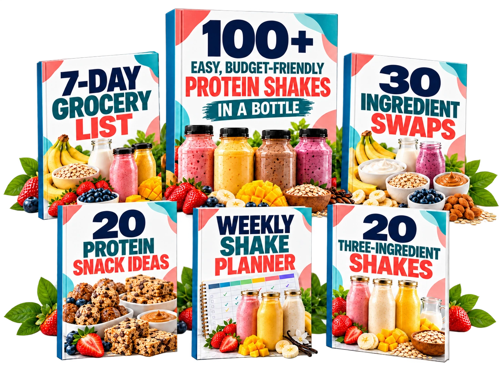

105 shake recipes
Fresh ideas for your everyday rotation.

A digital recipe book with 105 easy shake ideas, familiar ingredients and clear portions. Blend, pour into a bottle and keep refrigerated until you’re ready to enjoy.
Fresh ideas for your everyday rotation.
Estimated nutrition for each serving.
Ingredient amounts, not guesswork.
Find a recipe that fits your day.
Options for what you have on hand.
Choose by flavor or routine.
Simple options to prepare and enjoy.
Keep your recipe ideas close.
Ingredients, quantities, estimated protein and calories, prep time, substitutions and step-by-step directions.
Categories organize recipe styles—not a promise of weight loss or muscle gain.
SEE THE COMPLETE BUNDLE →From your morning coffee to a chocolate fix.








01Pick a flavor you actually want.Break out of the same-shake-every-day rut.
02Gather familiar ingredients.Think oats, frozen fruit, milk or a suitable alternative.
03Blend, then pour into a bottle.Follow the recipe steps. A blender is needed unless a recipe says otherwise.
04Refrigerate until you’re ready.Keep perishable shakes chilled. Follow the recipe and ingredient storage guidance—not every shake keeps for the same time.
The complete bundle includes:
Illustrative bonus mockups shown. All five bonus guides are digital PDFs.
SEE EVERYTHING INCLUDED →
USD · Complete bundle
Make My Protein Routine Easier →Continue to Hotmart checkout. Taxes may apply.
You have 7 days from purchase to review the material. If it isn’t right for you, request a refund through Hotmart within that period.
No. The product is a digital PDF. The book and device images are illustrative mockups. No physical book, bottle, food or supplement is included.
Yes, unless an individual recipe specifically says otherwise. Blend your shake first, then pour it into a bottle. Keep perishable shakes refrigerated until you’re ready to enjoy.
Check each recipe’s ingredient list and substitutions to choose suitable options. Do not assume every recipe is powder-free or dairy-free.
No. Nutrition values are estimates per stated serving. Brands, portion sizes and substitutions can change the totals. The recipe illustrations are AI-generated, not photographs of tested results. Recipes are not kitchen-tested; nutrition is estimated, not lab-tested.
That depends on the recipe and ingredients. Follow their storage guidance, keep perishable ingredients chilled, and do not assume every shake keeps for the same length of time.
No. It is a recipe guide, not medical advice or a personalized meal plan. It does not promise weight loss, muscle gain or any particular health result. Check ingredients for your allergies and dietary needs.
The offer button takes you to the seller’s Hotmart checkout. The listed price is $19.99 USD; applicable taxes may be added. Confirm availability, delivery details and refund terms at checkout before purchasing.